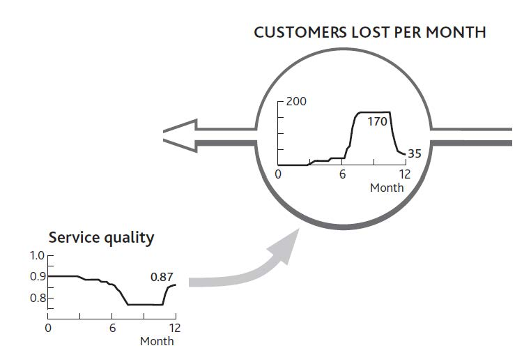

We now return to the other class of interdependence between resources, where an inadequate quantity of one resource slows and stops the growth of others. We can illustrate this by returning to the example of your restaurant.
Figure 3.4 "How Changing Customer Numbers Drives Performance Over Time (for clarity, some items are not shown)" showed a slowdown in customer growth, which even your strong marketing efforts failed to increase for more than a short time. Figure 3.6 "The Separate Flows of Customers Into and Out of Your Regular Customer Group" explained separately the inflows and outflows that led to this. The questions we are left with are (a) Why did your customer growth stall in the early months? and (b) Why did customers leave in such high numbers from August through November? The clue lies in what happened to staff numbers during the year: nothing! You had 20 staff members throughout.
Customer numbers were fairly stable until you did your big marketing push, although by June you were losing nearly as many customers each month as you were gaining. It seems that your staff were at the limit of their ability to cope. This is borne out by the information on customer service quality shown in Figure 4.8 "The History of Service Quality and Customer Losses". When service quality was high, customer losses were low, but when service quality took a dive, customer losses shot up.
Data on service quality, by the way, are not hard to estimate, even if you do not research them scientifically. Staff tips, complaints, and customer comment cards all offer simple information from which to estimate service quality. The resulting numbers may not be precise, but they are good enough to explain what’s happening and guide corrective action.
So now we can pursue the causal linkages and ask why service quality suffered. It seems your staff could only cope with the 4,000 meals per month bought by your original 500 customers. When sales jumped to well over 5,500 per month thanks to your marketing efforts, service quality dropped sharply: Your resources were badly out of balance.
If we connect parts of Figure 3.5 "The Net Flow of Customers Into and Out of Your Regular Customer Group" with Figure 4.8 "The History of Service Quality and Customer Losses", we can see how this story played out (Figure 4.9 "Why Service Quality Suffered Then Recovered") and explain what happened to your restaurant over the past year.
Figure 4.8 The History of Service Quality and Customer Losses
There are always limits to how far this cycle of reinforcing growth can go. Balancing mechanisms set in at some point: either you run out of potential resource or you run up against constraints caused by finite levels of other resources. Such balancing feedbackMechanisms that, when detected and managed, can reverse the restrictions on growth or the potential for collapse within an organization. structures can also be discovered by tracing back what is causing any resource flow to run at the rate it is. Detecting and managing these balancing effects can remove brakes on growth and protect organizations against overshoot or runaway collapse.
Figure 4.9 Why Service Quality Suffered Then Recovered

Here are some tips for analyzing the interdependence between resources and using your resulting understanding to manage their development:
It is possible that putting the history charts for these items around the flow you want to explain will clarify sufficiently what has been happening and why. But it may be necessary to go further:
Eventually, you will get back to existing resources, and you will have completed the chain of interdependence. Staff turnover will perhaps be explained by current number of customers (driving workload) and existing number of staff. You can now work around all these explanations for the resource flow with your colleagues and assess the likely effectiveness of any options that may be available to manage that flow into the future.